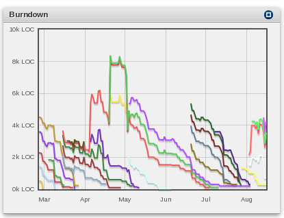

View progress of individual milestones
|  The portlet displays the progress of the individual milestones. It will tell you, how much work ishttp://wiki.arago.de:80/was left to do for a given date. The x-axis is a time span, the y-axis is LOC. The lines can be activated on certain points which will trigger a filter. Upon choosing a release in the Dependencies, this portlet will filter to all milestones from the selected release. |